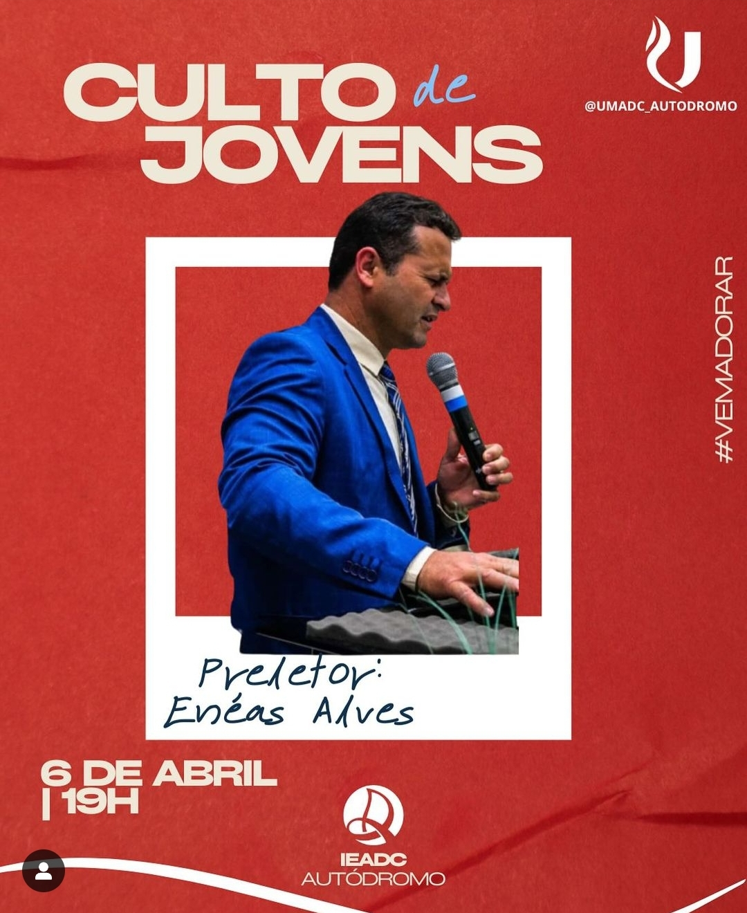
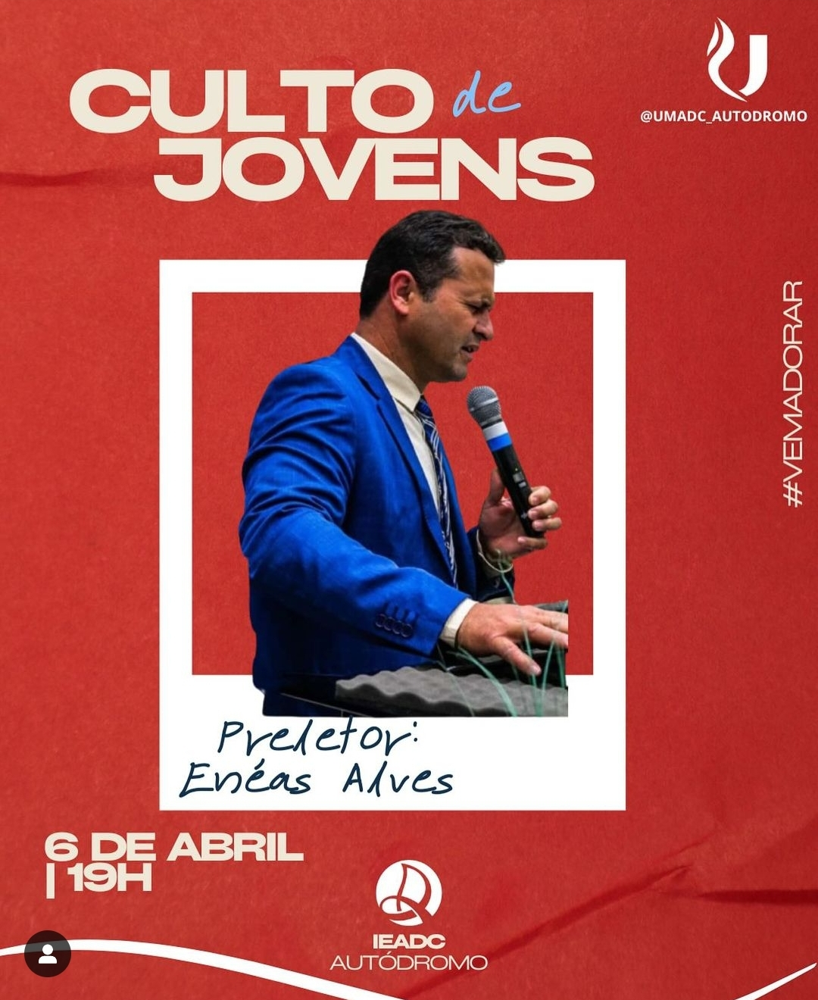

Sei que às vezes a vida nos leva por caminhos diferentes e podemos nos afastar das coisas que são importantes para nós. Gostaria de te convidar para se juntar a nós no sábado e domingo de culto em nossa igreja. Seria maravilhoso ter você presente conosco, compartilhando momentos de adoração e comunhão. Sinta-se à vontade para entrar em contato conosco para mais detalhes ou para qualquer dúvida que possa ter. Espero te ver em breve! Irma Luciana